Week 8 - Day 1 (Chapter 6 - Pt. 3)
Navigate using audio
Announcements
- 2nd Test on Wednesday
- On material from the end of the last test until what we get to Wednesday
- Anything you were asked on the first test, you are expected to know
- Although you won’t be asked explicit questions from it
- Similar format to what we saw on the first test
- You will not be allowed to leave until 7:10
Clicker 1
-
Audio 0:05:34.960803
- Choose the best Lewis structure for SeO4^2-
- Add up valence electrons and get 6 + 4(6)+ 2 = 32 electrons
- Means 16 pairs
- This can be drawn 5 different ways.
- We can determine that the best solution is the one with two double bonds and the double bonds horizontal
- Video
Chapter 6 Pt 2
VSEPR Valence Shell Electron Pair Repulsion a Method of Predicting Geometry
VSEPR Theory and Molecular Geometries Structure Determines Properties
- Audio 0:08:34.357376
- Structure of Compounds Determines Their Properties
- Properties of molecular substances depend on the structure of the molecule.
- The structure includes many factors:
- The skeletal arrangement of the atoms
- The kind of bonding between the atoms
- Ionic, polar covalent, or covalent
- The shape of the molecule
- Bonding theory predicts the shapes of molecules.
What is Molecular Geometry?
- Audio 0:08:43.125118
- Molecules are three-dimensional objects.
- Molecular geometries:
- Describe the shape of a molecule with terms that relate to geometric figures
- Have characteristic “corners” that indicate the positions of the surrounding atoms around a central atom in the center of the geometric figure
- Have characteristic angles that are called bond angles
Lewis Theory
- Audio 0:09:38.911219
- Lewis theory predicts there are regions of electron density in an atom. + These regions of electron density should repel each other
because the regions are negatively charged.
- Some regions result from placing shared pairs of valence electrons between bonding nuclei.
- Other regions result from placing unshared valence electrons on a single nuclei.
- These regions are called “electron groups”
- Audio 0:10:23.928591
- This idea can then be extended to predict the shapes of the molecules.
- The position of atoms surrounding a central atom will be determined by where the bonding electron groups are.
- The positions of the electron groups will be determined by trying to minimize repulsions between them.
VSEPR (Valence Shell Electron Pair Repulsion) Theory
- Audio 0:10:57.562360
- Electron groups around the central atom will be most stable when they are as far apart as possible.
- This is the basis for VSEPR (valence shell electron pair repulsion) theory.
- Because electrons are negatively charged, they should be most stable when they are separated as much as possible.
- The resulting geometric arrangement will allow us to predict the shapes and bond angles in the molecule.
- 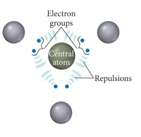
Electron Groups
- Audio 0:11:58.852503
- The Lewis structure predicts the number of valence electron pairs around the central atoms.
- Each lone pair of electrons constitutes one electron group on a central atom.
- Each bond constitutes one electron group on a central atom, regardless of whether it is single, double, or triple.
- Example: NO2
- 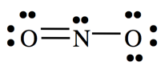
- There are three electron groups on N:
- Three lone pairs
- One single bond
- One double bond
- There are three electron groups on N:
Electron Group Geometry
- Audio 0:12:41.207985
- There are five basic arrangements of electron groups around a
central atom.
- Arrangements are as follows:
- Linear, trigonal planar, tetrahedral, bipyramidal, and octahedral
- Based on a maximum of six bonding electron groups
- Though there may be more than six on very large atoms, it is very rare.
- Each of these five basic arrangements results in five different basic
electron geometries.
- In order for the molecular shape and bond angles to be a “perfect” geometric figure, all the electron groups must be bonds and all the bonds must be equivalent.
- For molecules that exhibit resonance, it doesn’t matter which resonance form you use as the electron geometry will be the same
Valence shell electron pair repulsion (VSEPR) model:
- Audio 0:14:33.045667 | Class | # of atoms bonded to central atom | # lone pairs on central atom | arrangements of electron groups | molecular geometry | | — | — | — | — | — | | AB2 | 2 | 0 | 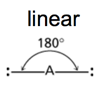 | 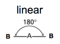 |
Beryllium Chloride
- Audio 0:15:20.954184
- 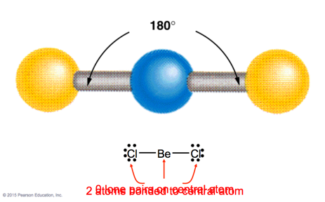
- Beryllium has two valence electrons
- Linear molecule
Carbon dioxide
- 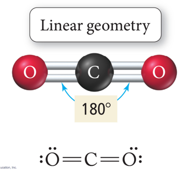
- Double bonds but still linear
- VSEPR says the Oxygens want to be as far away from each-other as possible
VSEPR
- Audio 0:16:30.584774
| Class | # of atoms bonded to central atom | # lone pairs on central atom | arrangement of electron groups | molecular geometry |
|---|---|---|---|---|
| AB2 | 2 | 0 | linear | linear |
| AB3 | 3 | 0 | trigonal planar 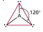 | trigonal planar 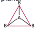 |
- To minimize electron repulsion, the atoms form a trigonal planar (or are 120 degrees angled from each-other)
Boron Trifluoride
- Audio 0:17:18.718797
- 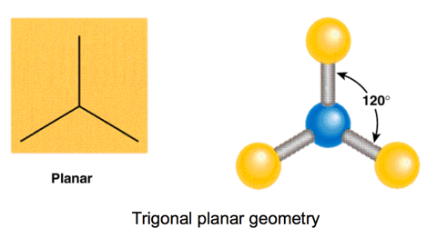
More complicated
- 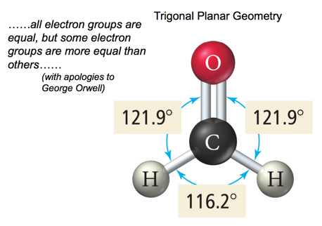
VSEPR
- Audio 0:19:31.975550
| Class | # of atoms bonded to central atom | # lone pairs on central atom | arrangement of electron groups | molecular geometry |
|---|---|---|---|---|
| AB2 | 2 | 0 | linear | linear |
| AB3 | 3 | 0 | trigonal planar | trigonal planar |
| AB4 | 4 | 0 | tetrahedral 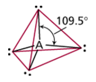 | tetrahedral 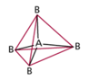 |
- tetrahedral is most common
- 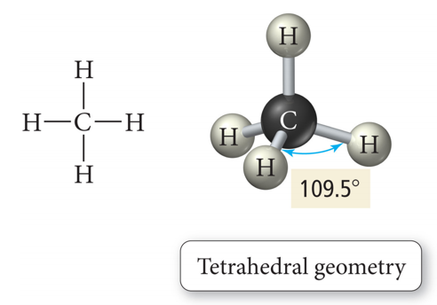
VSEPR (trigonal)
- Audio 0:21:35.070764
| Class | # of atoms bonded to central atom | # lone pairs on central atom | arrangement of electron groups | molecular geometry |
|---|---|---|---|---|
| AB2 | 2 | 0 | linear | linear |
| AB3 | 3 | 0 | trigonal planar | trigonal planar |
| AB4 | 4 | 0 | tetrahedral | tetrahedral |
| AB5 | 5 | 0 | trigonal bipyramidal 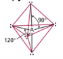 | trigonal bipyramidal 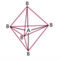 |
Phosphorus Pentachloride
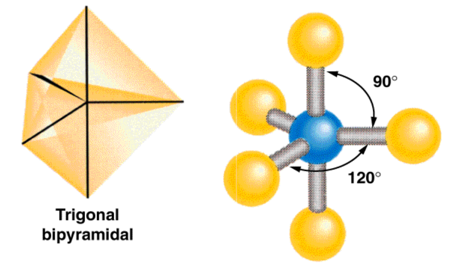
Five Electron Groups: Trigonal Bipyramidal
- Audio 0:23:20.082880 Electron Geometry
- When there are five electron groups around the central atom, they will occupy
positions in the shape of two tetrahedral that are base to base with the central
atom in the center of the shared bases.
- This results in the electron groups taking a trigonal bipyramidal geometry.
- The positions above and below the central atom are called the
axial positions.
- The bond angle between axial and equatorial positions is 90°.
- The positions in the same base plane as the central atom are called
the equatorial positions.
- The bond angle between equatorial positions is 120°.
- 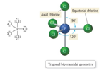
VSEPR
| Class | # of atoms bonded to central atom | # lone pairs on central atom | arrangement of electron groups | molecular geometry |
|---|---|---|---|---|
| AB2 | 2 | 0 | linear | linear |
| AB3 | 3 | 0 | trigonal planar | trigonal planar |
| AB4 | 4 | 0 | tetrahedral | tetrahedral |
| AB5 | 5 | 0 | trigonal bipyramidal | trigonal bipyramidal |
| AB6 | 6 | 0 | octahedral 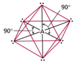 | octahedral 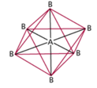 |
Sulfur Hexafluoride
- 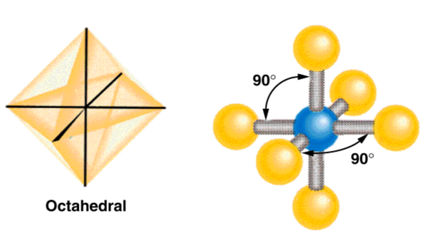
Octahedral Electron Geometry
- When there are six electron groups around the central atom, they will occupy positions in the shape of two square-base pyramids that are base-to-base with the central atom in the center of the shared bases.
- This results in the electron groups taking an octahedral geometry.
- It is called octahedral because the geometric figure has eight sides.
- All positions are equivalent.
- The bond angle is 90°.
HCN example. What is the molecular geometry?
- 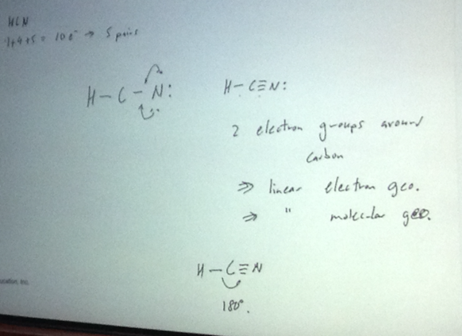
Clicker 2
- Audio 0:31:55.556328
- Determine the electron geometry (eg) and the molecular geometry (mg) of CO3^2-
- A) eg = tetrahedral, mg = tetrahedral
- B) eg = tetrahedral, mg = trigonal pyramidal
- C) eg = trigonal planar, mg = bent
- D) eg = trigonal planar, mg = trigonal planar
- E) eg = tetrahedral, mg = trigonal planar
Electron Pair Geometry versus Molecular Geometry
- The actual geometry of the molecule may be different from the electron geometry.
- When the electron groups are attached to atoms of different size, or when the bonding to one atom is different from the bonding to another, this will affect the molecular geometry around the central atom.
- Lone pairs affect the molecular geometry.
- Lone pair groups: Occupy space on the central atom but are not “seen” as points on the molecular geometry
Bent Molecular Geometry: Derivative of Trigonal Planar Electron Geometry
- Audio 0:33:48.975493
- 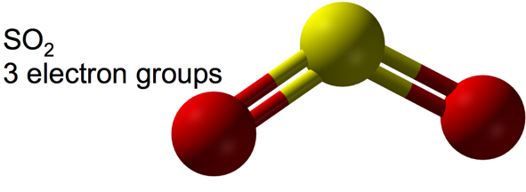
- bent
-
- When there are three electron groups around the central atom, and one of them is a lone pair, the resulting shape of the molecule is called a trigonal planar-bent shape.
Pyramidal and Bent Molecular Geometries: Derivatives of Tetrahedral Electron Geometry
- Audio 0:34:54.926890
- When there are four electron groups around the central atom, and one is a lone pair, the result is called a pyramidal shape because it is a triangular-base pyramid with the central atom at the apex.
- 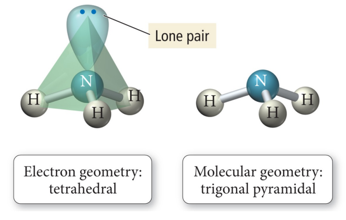
Pyramidal and Bent Molecular Geometries: Derivatives of Tetrahedral Electron Geometry
- Audio 0:35:07.965087
- When there are four electron groups around the central atom, and two are lone pairs, the result is called a tetrahedral-bent shape.
- It is planar.
- To a first approximation: trigonal planar-bent shape
- 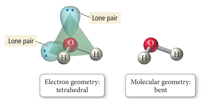
Effect of Lone Pairs on Molecular Structure
- Audio 0:36:21.514009
- The bonding electrons are shared by two atoms, so some of the negative charge is removed from the central atom.
- 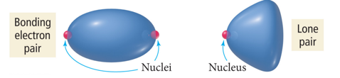
- Relative sizes of repulsive force interactions are as follows:
- Lone pair to Lone pair > Lone pair to Bonding pair > Bonding pair to Bonding pair
- Audio 0:37:42.812819
- 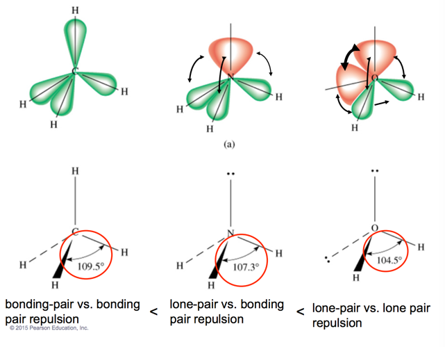
Derivatives of the Trigonal Bipyramidal Electron Geometry
- Audio 0:40:22.114199
- When there are five electron groups around the central atom, and some are lone pairs, they will occupy the equatorial positions because there is more room.
- The bond angles between equatorial positions are less than 120°.
- The bond angles between axial and equatorial positions are less than 90°.
- Linear = 180° axial to axial.
- When there are five electron groups around the central atom, and one is a lone pair, the result is called the seesaw shape or sawhorse (aka distorted tetrahedron).
- 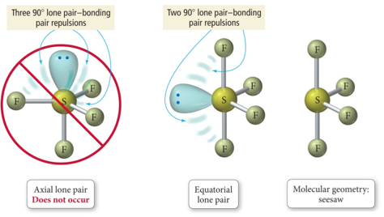
Derivatives of the Trigonal Bipyramidal Electron Geometry
- Audio 0:42:44.020369
- When there are five electron groups around the central atom, and two are lone pairs, the result is T-shaped.
- 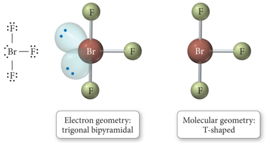
Derivatives of the Trigonal Bipyramidal Electron Geometry
- When there are five electron groups around the central atom, and three are lone pairs, the result is Linear
- 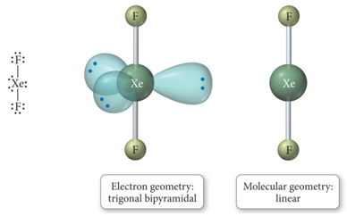
Derivatives of the Octahedral Geometry
- Audio 0:43:51.697546
- When there are six electron groups around the central atom, and some are lone pairs, each even number lone pair will take a position opposite the previous lone pair.
- When there are six electron groups around the central atom, and one is a lone pair, the result is called a square pyramid shape.
- The bond angles between axial and equatorial positions are less than 90°.
- 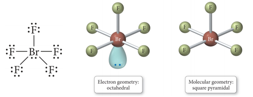
- Audio 0:44:31.634918
- When there are six electron groups around the central atom, and some are lone pairs, each even number lone pair will take a position opposite the previous lone pair.
- When there are six electron groups around the central atom, and two are lone pairs, the result is called a square planar shape.
- The bond angles between equatorial positions are 90°
- 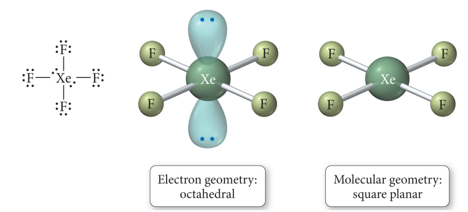
Table 6.5
- 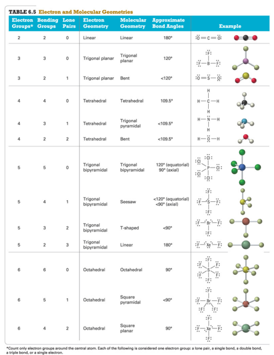
- Need to know by wednesday # Vocab
| Term | Definition |
|---|---|
| bond angles | characteristic angles of molecular bonding |
| VSEPR (valence shell electron pair repulsion) | Says that electron groups around the central atom will be most stable when they are as far away as possible |
| trigonal bipyramidal geometry | when you have five atoms bonded to the central atom, you get this geometry |
| axial | the positions above and below the central atom are called this type of position |
| equatorial positions | positions in the same plane as the central atom |
| octahedral geometry | molecular shape with eight sides |
| trigonal planar-bent shape | shape that forms when there are three electron groups around the central atom and one of them is a lone pair |
| pyramidal shape | when there are four electron groups around the central atom and one is a lone pair |
| tetrahedral-bent shape | shape formed when there are four electron groups around the central atom and two are lone pairs |
| bonding force sizes | Lone pair to Lone pair > Lone pair to Bonding pair > Bonding pair to Bonding pair |
| seesaw shape | shape formed when there are five electron groups around the central atom, and one is a lone pair |
| t-shaped | shape formed when there are five electron groups around the central atom and two are lone pairs |
| square pyramid shape | shape formed when there are six electron groups around the central atom and one is a lone pair |
| square planar shape | shape formed when there are six electron groups around the central atom, and two are lone pairs |